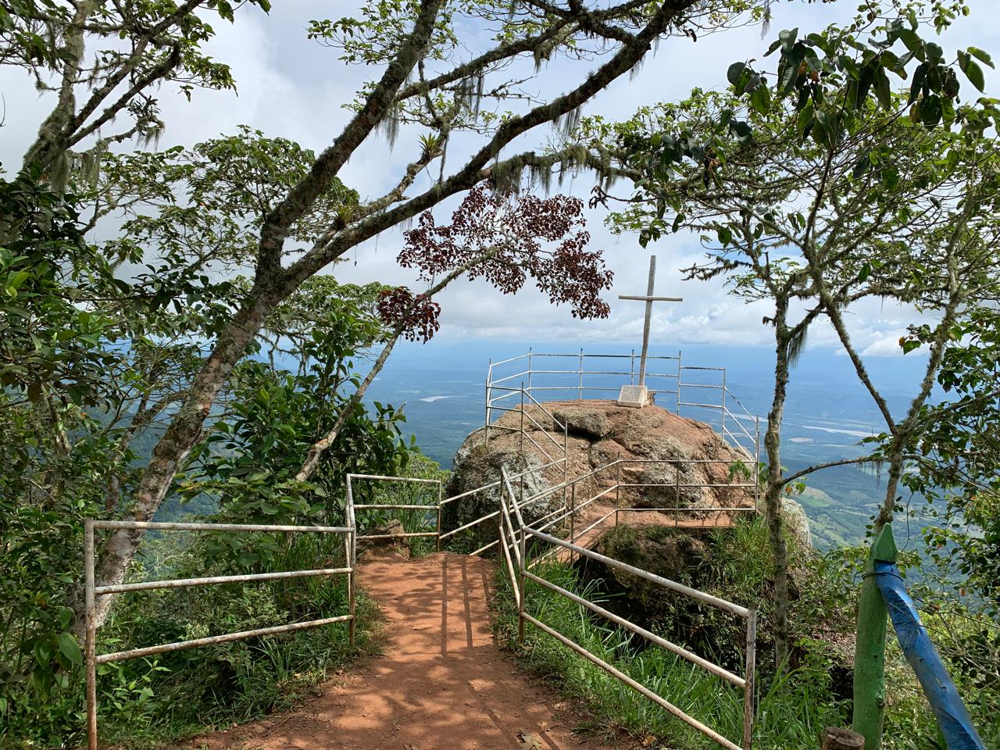

Deportes Extremos Y De Aventura
Deportes extremos y de aventura Además del rafting y el canotaje, Tobia es popular por una amplia gama de actividades de aventura. Entre los deportes más practicados se encuentran: Torrentismo (descenso por cascadas), Rappel (descenso controlado por superficies verticales), Tirolesa (canopy), para deslizarse por cables a gran altura, Canyoning, que combina escalada, natación y caminata a lo largo de un cañón.
Caminatas Ecologicas
Tobia ofrece varios senderos para hacer caminatas que permiten disfrutar de la biodiversidad de la región. A través de estos senderos, los turistas pueden explorar la exuberante vegetación, cruzar ríos y arroyos, y disfrutar de vistas panorámicas del paisaje montañoso. Muchos de estos senderos llevan a puntos como las cascadas o los miradores del Cañón del Río Negro.
Piedra Capira
A unos kilómetros de Tobia se encuentra este espectacular mirador natural. Desde la Piedra Capira, se puede tener una vista impresionante del valle del Magdalena, incluyendo el río y las montañas que lo rodean. Es un lugar perfecto para quienes disfrutan de vistas panorámicas y aman la fotografía de paisajes.
Finca Turistica Tobia
Muchas fincas en la zona han sido adaptadas para el turismo rural, ofreciendo alojamiento en medio de la naturaleza, con actividades como paseos a caballo, pesca y visitas a plantaciones locales. Estas fincas son ideales para desconectarse del ritmo de la ciudad y disfrutar de un entorno más tranquilo.
Parque Principal De Tobia
En el centro del corregimiento se encuentra un pequeño parque que es un punto de encuentro para los visitantes y locales. Aunque Tobia es principalmente reconocido por su naturaleza, el parque es un lugar acogedor donde se puede disfrutar de la vida cotidiana del pueblo y admirar la iglesia del lugar.
Cañon Del Rio Negro
El cañón que forma el Río Negro es otro de los atractivos naturales de la zona. La imponente geografía, con paredes rocosas y exuberante vegetación, lo convierte en un sitio espectacular para practicar deportes extremos como rappel y escalada. También es ideal para caminatas ecológicas y observación de fauna y flora.
Cascada Del Tigre
Esta impresionante cascada es un atractivo natural cercano a Tobia. Para llegar, es necesario realizar una caminata, lo que añade un toque de aventura a la experiencia. La belleza de la cascada y el entorno natural la convierten en un lugar muy visitado por aquellos que buscan relajarse en medio de la naturaleza.